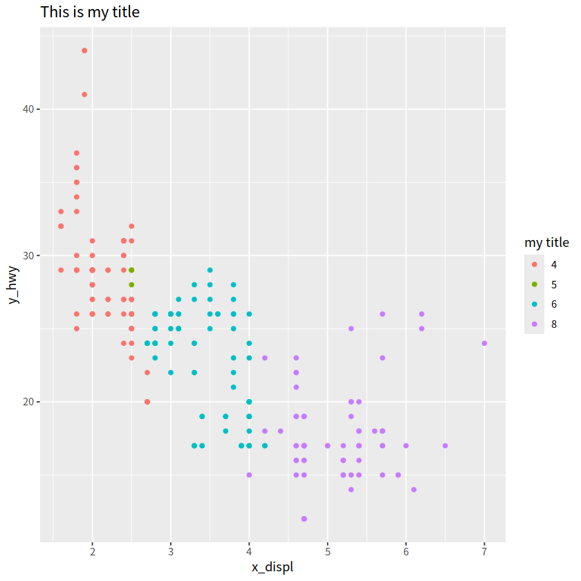
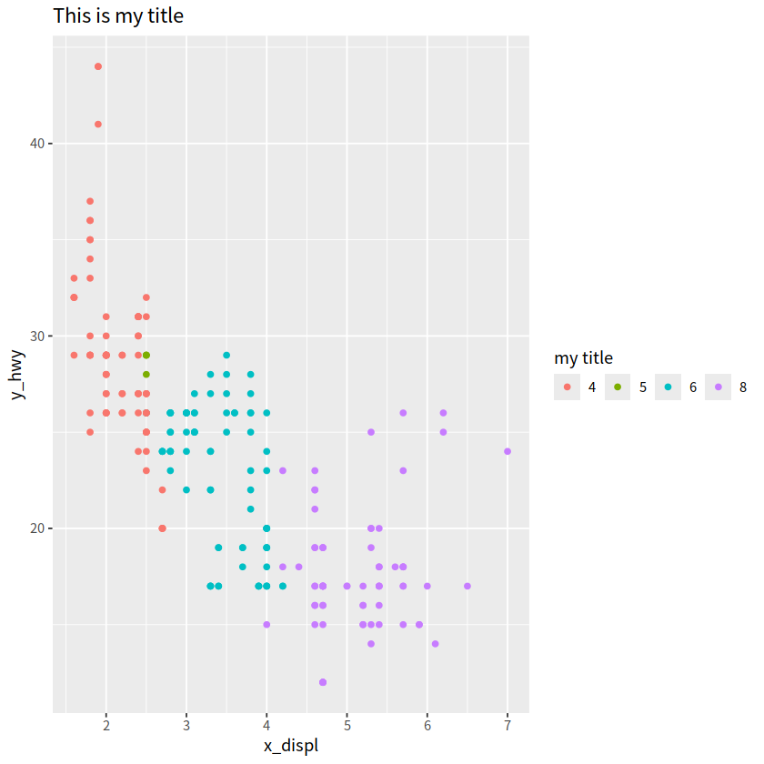
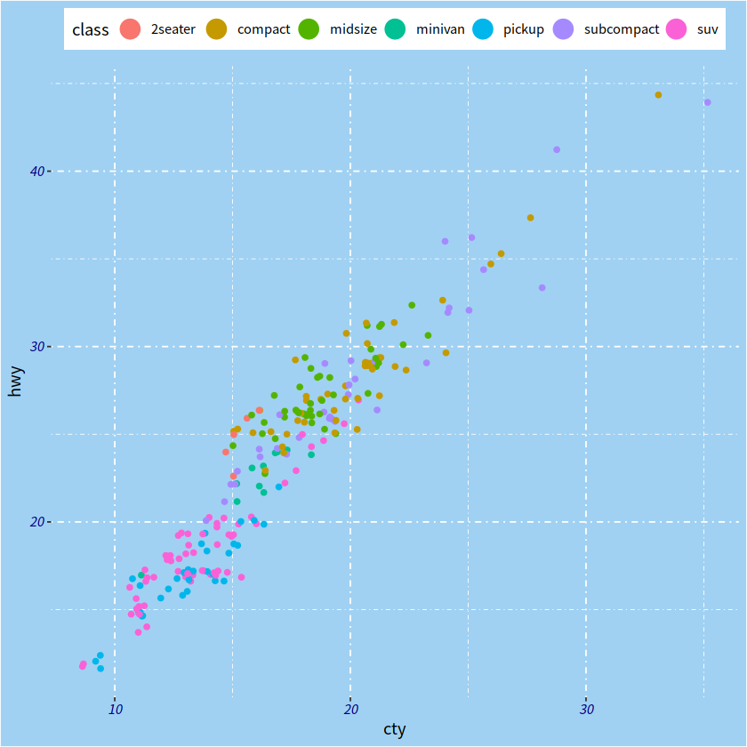
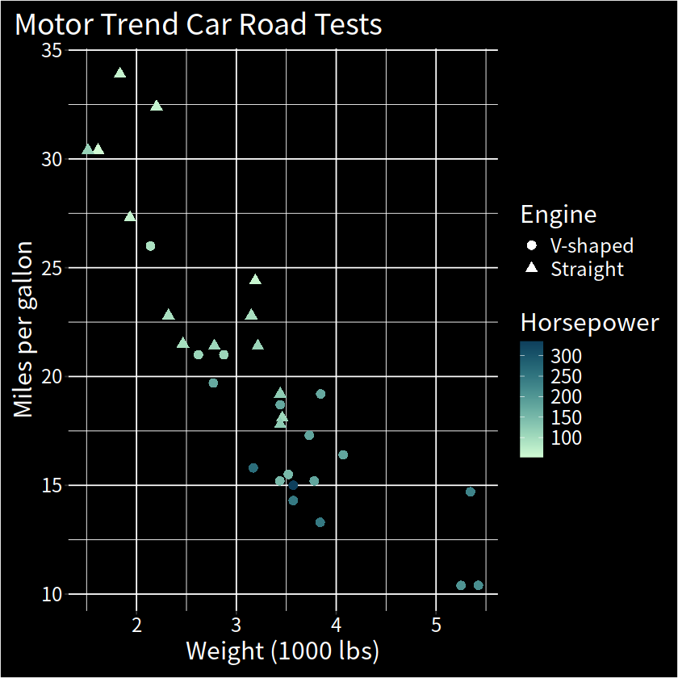

ggplot进阶之图例系统#
library(tidyverse)
── Attaching core tidyverse packages ───────────────────────────────────────────────────────────────────────────────────────────────────────────────────────── tidyverse 2.0.0 ──
✔ dplyr 1.1.4 ✔ readr 2.1.5
✔ forcats 1.0.0 ✔ stringr 1.5.1
✔ ggplot2 3.5.0 ✔ tibble 3.2.1
✔ lubridate 1.9.3 ✔ tidyr 1.3.1
✔ purrr 1.0.2
── Conflicts ─────────────────────────────────────────────────────────────────────────────────────────────────────────────────────────────────────────── tidyverse_conflicts() ──
✖ dplyr::filter() masks stats::filter()
✖ dplyr::lag() masks stats::lag()
ℹ Use the conflicted package (<http://conflicted.r-lib.org/>) to force all conflicts to become errors
mpg %>%
ggplot(aes(x = displ, y = hwy, color = factor(cyl)))+
geom_point()

如果想调整图例的样式，可以使用guides()函数，用法类似theme函数, 具体参数为：
要么是字符串 (i.e.
"color = colorbar"or"color = legend"),要么是特定的函数 (i.e.
color = guide_colourbar()orcolor = guide_legend())

以下 guides() 函数族用于控制图例的外观
guide_colorbar(): continuous colorsguide_legend(): discrete values (shapes, colors)guide_axis(): control axis text/spacing, add a secondary axisguide_bins(): creates “bins” of values in the legendguide_colorsteps(): makes colorbar discrete

2 案例详解#
mpg %>%
ggplot(aes(x = displ, y = hwy, color = factor(cyl)))+
geom_point()+
ggtitle("This is a title")+
labs(x = "x_displ", y = "y_hwy")+
guides(color = "legend")

mpg %>%
ggplot(aes(x = displ, y = hwy, color = factor(cyl))) +
geom_point() +
ggtitle("This is my title") +
labs(x = "x_displ", y = "y_hwy") +
guides(color = guide_legend(title = "my title",
label.hjust = 1))

mpg %>%
ggplot(aes(x = displ, y = hwy, color = factor(cyl))) +
geom_point() +
ggtitle("This is my title") +
labs(x = "x_displ", y = "y_hwy") +
guides(color = guide_legend(ncol = 4,
title = "my title"))

mpg %>%
ggplot() +
geom_jitter(aes(x = cty, y = hwy, color = class),
key_glyph = draw_key_pointrange)+
guides(color = guide_legend(nrow = 1))+
theme(legend.position = "top",
axis.text = element_text(face = "italic", color = "navy"),
plot.background = element_rect(fill = "#a0d1f2"),
panel.background = element_blank(),
panel.grid = element_line(linetype = "dotdash"))

mpg %>%
ggplot(aes(x = displ, y = hwy, color = factor(cyl))) +
geom_point() +
ggtitle("This is my title") +
labs(x = "x_displ", y = "y_hwy") +
guides(color = guide_legend(title = "title is too high",
title.position = "top",
title.vjust = 5,
label.position = "left",
label.hjust = 1,
label.theme = element_text(size = 15, angle = 0,
face = "italic",color = "red"),
keywidth = 5,
reverse = TRUE))

3 删除其中一个图例#
guides(color = "none)
guides(color = guide_none())
mpg %>%
ggplot(aes(x = displ, y = hwy, color = class, size = cyl))+
geom_point()

比如，我们想删除size这个图例，那么需要这样做
mpg %>%
ggplot(aes(x = displ, y = hwy, color = class, size = cyl))+
geom_point()+
guides(color = guide_legend("type"), # keep
size = "none") # remove
mpg %>%
ggplot(aes(x = displ, y = hwy, color = class, size = cyl))+
geom_point()+
guides(color = guide_legend("class"), # keep
size = "none") # remove


或者
mpg %>%
ggplot(aes(x = displ, y = hwy, color = class, size = cyl)) +
geom_point() +
guides(color = guide_legend("type"),
size = guide_none())
4 合并图例#
library(tidyverse)
library(palmerpenguins)
penguins %>%
ggplot(aes(x = bill_length_mm, y = bill_depth_mm,
color = body_mass_g, size = body_mass_g))+
geom_point(alpha = 0.6)+
scale_color_viridis_c()
Warning message:
“Removed 2 rows containing missing values or values outside the scale range (`geom_point()`).”

这里color 和 size 都使用了body_mass_g映射，我们可以将两者合并
penguins %>%
ggplot(aes(x = bill_length_mm, y = bill_depth_mm,
color = body_mass_g, size = body_mass_g))+
geom_point(alpha = 0.6)+
scale_color_viridis_c()+
guides(color = guide_legend())
Warning message:
“Removed 2 rows containing missing values or values outside the scale range (`geom_point()`).”

更直观的方法
penguins %>%
ggplot(aes(x = bill_length_mm, y = bill_depth_mm,
color = body_mass_g, size = body_mass_g))+
geom_point(alpha = 0.6)+
scale_color_viridis_c()+
guides(color = guide_legend(),
size = guide_legend())
Warning message:
“Removed 2 rows containing missing values or values outside the scale range (`geom_point()`).”
或者
penguins %>%
ggplot(aes(x = bill_length_mm, y = bill_depth_mm,
color = body_mass_g, size = body_mass_g))+
geom_point(alpha = 0.6)+
scale_color_viridis_c()+
guides(color = guide_legend("title"),
size = guide_legend("title"))
Warning message:
“Removed 2 rows containing missing values or values outside the scale range (`geom_point()`).”

最省力的是
penguins %>%
ggplot(aes(x = bill_length_mm, y = bill_depth_mm,
color = body_mass_g, size = body_mass_g))+
geom_point(alpha = 0.6)+
scale_color_viridis_c(guide = "legend")
Warning message:
“Removed 2 rows containing missing values or values outside the scale range (`geom_point()`).”
mtcars %>%
as_tibble() %>%
ggplot(aes(x = wt, y = mpg, shape = factor(vs), color = hp)) +
geom_point(size = 3) +
colorspace::scale_color_continuous_sequential(palette = "Dark Mint") +
scale_shape_discrete(labels = c("V-shaped", "Straight")) +
labs(
x = "Weight (1000 lbs)", y = "Miles per gallon",
title = "Motor Trend Car Road Tests",
shape = "Engine", color = "Horsepower"
) +
theme(
text = element_text(size = 18, color = "white"),
rect = element_rect(fill = "black"),
panel.background = element_rect(fill = "black"),
legend.key = element_rect(fill = "black"),
axis.text = element_text(color = "white"),
plot.title.position = "plot",
plot.margin = margin(10, 10, 10, 10)
) +
guides(
shape =
guide_legend(override.aes = list(color = "white"))
)
